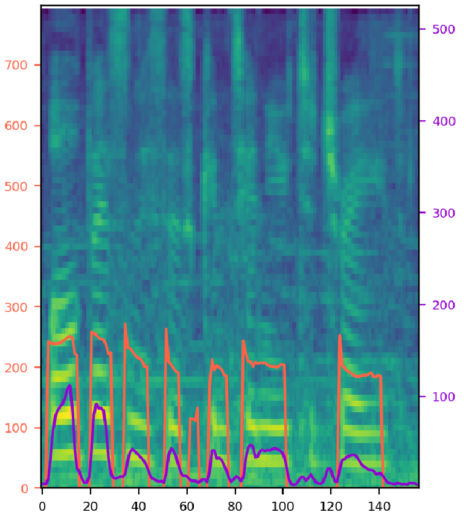
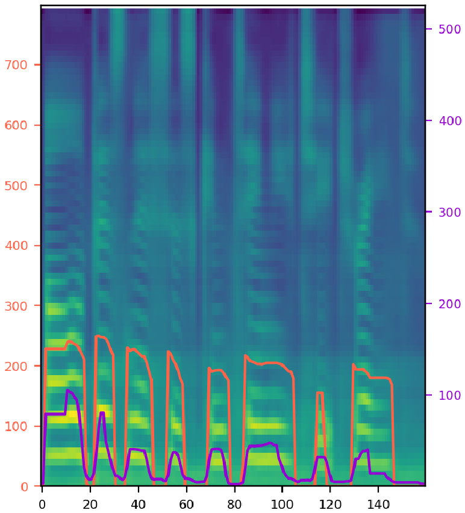
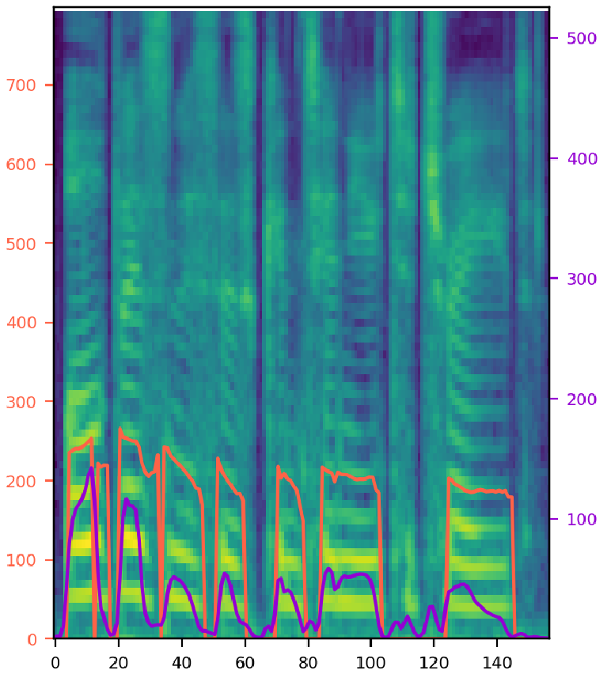
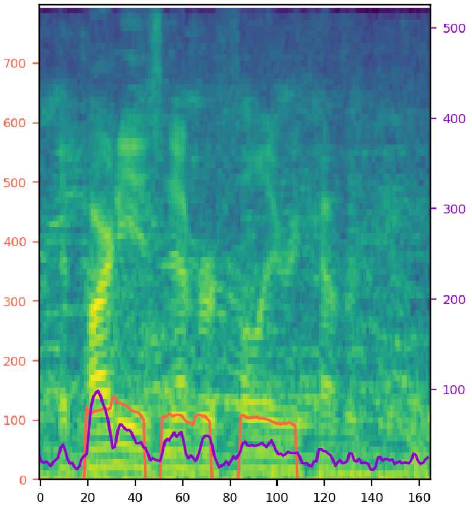
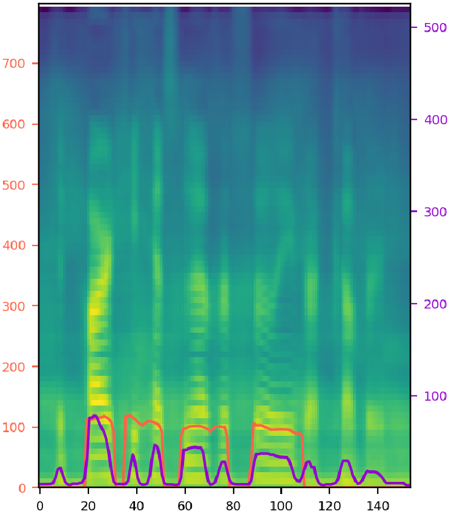
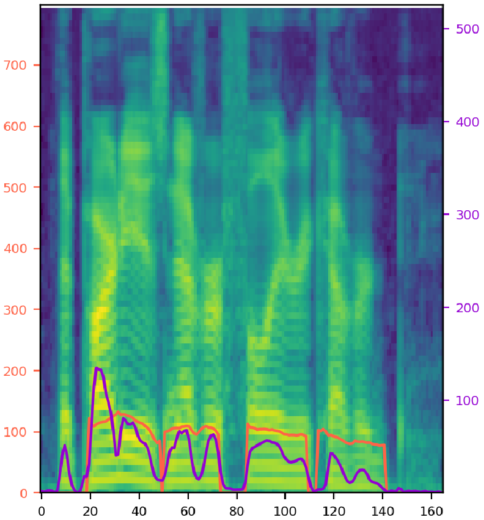

Paper: arXiv:2103.09474
Authors: Keon Lee, Kyumin Park, Daeyoung Kim.
Abstract:
Previous works on expressive text-to-speech (TTS) have a limitation on robustness and speed when training and inferring.
Such drawbacks mostly come from autoregressive decoding, which makes the succeeding step vulnerable to preceding error.
To overcome this weakness, we propose
Try various style factor combinations. The model output (middle) is synthesized speech from single noisy audio (left) with given text. The orange line represents pitch contour, and the purple line represents energy. 'T', 'D', 'P', 'E', 'S', and 'N' refer to the text, duration, pitch, energy, speaker, and noise encoding. A selected combination of these encodings is fed into the model. Note that the clean audio (right) is shown for the comparison, and it is not given to the model during inference. SNR stands for signal-to-noise ratio, where a ratio higher than 1:1 (greater than 0 dB) indicates more signal than noise.
| Noisy Audio (Ground-truth) | STYLER | Clean Audio (Ground-truth) | |
|---|---|---|---|
| 1: A female speaker with SNR 25, "All businesses continue to trade." | |||
|  |  |  | Combination: |
| 2: A male speaker with SNR 6, "The party has never fully recovered." | |||
|  |  |  | Combination: |
Samples from seen speaker with unseen corpus.
| Input Audio (Ground-truth) | Mellotron | FastSpeech2 | STYLER |
|---|---|---|---|
| 1: Female1, "input text" | |||
| 2: Female2, "input text" | |||
| 3: Male1, "input text" | |||
| 4: Male2, "input text" | |||
Samples from unseen speaker with unseen corpus.
| Input Audio (Ground-truth) | FastSpeech2 | Mellotron | STYLER |
|---|---|---|---|
| 1: Female3, "input text" | |||
| 2: Female3, "input text" | |||
| 3: Male3, "input text" | |||
| 4: Male3, "input text" | |||
Samples from seen speaker with unseen corpus.
| Input Audio (Ground-truth) | FastSpeech2 | Mellotron | STYLER |
|---|---|---|---|
| 1: Female4, "input text" (audio content), "input text" (target text) | |||
| 2: Female5, "input text" (audio content), "input text" (target text) | |||
| 3: Male4, "input text" (audio content), "input text" (target text) | |||
| 4: Male5, "input text" (audio content), "input text" (target text) | |||
Samples from unseen speaker with unseen corpus.
| Input Audio (Ground-truth) | FastSpeech2 | Mellotron | STYLER |
|---|---|---|---|
| 1: Female6, "input text" (audio content), "input text" (target text) | |||
| 2: Female6, "input text" (audio content), "input text" (target text) | |||
| 3: Male6, "input text" (audio content), "input text" (target text) | |||
| 4: Male6, "input text" (audio content), "input text" (target text) | |||